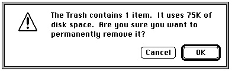

Legacy Document
Important: The information in this document is obsolete and should not be used for new development.
Important: The information in this document is obsolete and should not be used for new development.


Introduction to Alerts and Dialog Boxes
The behaviors and uses of alerts differ from those of dialog boxes. Important distinctions also exist between different types of alerts and between different types of dialog boxes. You choose among these according to the user's current situation.Your application should give an alert to report an error or to issue a warning to the
user. An alert can simply play a sound (called an alert sound) for the user, it can display an alert box that contains a message and requires an acknowledgment from the user,
or it can play an alert sound and simultaneously display an alert box. Alert boxes are special windows that contain informative text, buttons, and, generally, icons. They
may also contain pictures. As shown in Figure 6-1, an alert box typically consists of
text describing why the alert appears and buttons requiring the user to acknowledge
or rectify the problem.Figure 6-1 An alert box used by the Finder

By requiring the user to click a button, an alert box obliges the user to acknowledge the alert box before proceeding. To assist the user who isn't sure how to respond when an alert box appears, your application specifies a preferred button--which invokes a preferred action--for every alert box. The Dialog Manager draws a bold outline around the preferred button so that it stands out from the other buttons in the alert box. The outlined button is also the alert box's default button; if the user presses the Return key or the Enter key, the Dialog Manager acts as if the user had clicked this preferred button. For example, if the user presses the Return or Enter key in response to the alert box shown in Figure 6-1, the Dialog Manager inverts the OK button for 8 ticks and informs the Finder that the OK button has been selected; then the Finder responds by deleting the item contained in the Trash.
Use a dialog box when your application needs more information to carry out a command. Commands in menus normally act on only one object. If the user chooses a
command that your application cannot perform until the user supplies more information, use a dialog box to elicit the information from the user. If a command brings up
a dialog box, indicate this to your user by placing three ellipsis points (...) after the
command's name in the menu.A dialog box is a special window that typically resembles a form on which the user checks boxes and fills in blanks. Figure 6-2 shows a typical dialog box.
Figure 6-2 A typical dialog box
Although an alert typically requires only an acknowledgment to proceed from the user, a dialog box ordinarily requires the user to supply information--for instance, by entering text or by clicking a checkbox--necessary for completing the command. When you create a dialog box that carries out a command, you normally provide OK and Cancel buttons. When the user clicks the OK button, your application should perform the command according to the information that the user supplied in the dialog box. When the user clicks the Cancel button, your application should revoke the command and retract all of its actions as though the user had never given the command. Instead of using an OK button, you might use a button that describes the action to be performed; for example, you might use a Search button in a Search command's dialog box or a Remove button in a Remove command's dialog box. For simplicity, this chapter refers to the button that performs the action described in the dialog box as the OK button. You may even provide more than one button that performs the command, each in a slightly different way. For example, in a Change command's dialog box, you might include a Change Selection button to replace only the current selection and a Change All button to replace all occurrences throughout the entire document.
You can use any or all of the following elements in the dialog boxes you create:
- informative or instructional text
- rectangles in which text may be entered (initially blank or containing default text that can be edited)
- controls
- graphics (icons or QuickDraw pictures)
- other items as defined by your application
Subtopics
- Types of Alerts
- Types of Dialog Boxes
- Items in Alert and Dialog Boxes
- Events in Alert and Dialog Boxes
- Alert Boxes, Dialog Boxes, and the Window Manager
- About the Dialog Manager